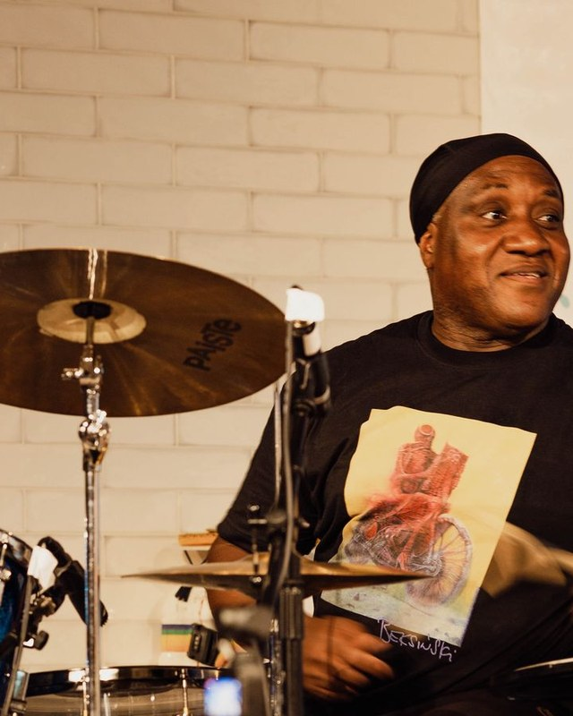
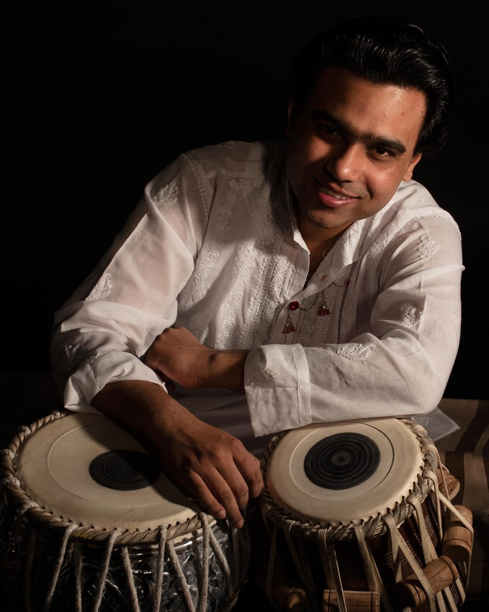
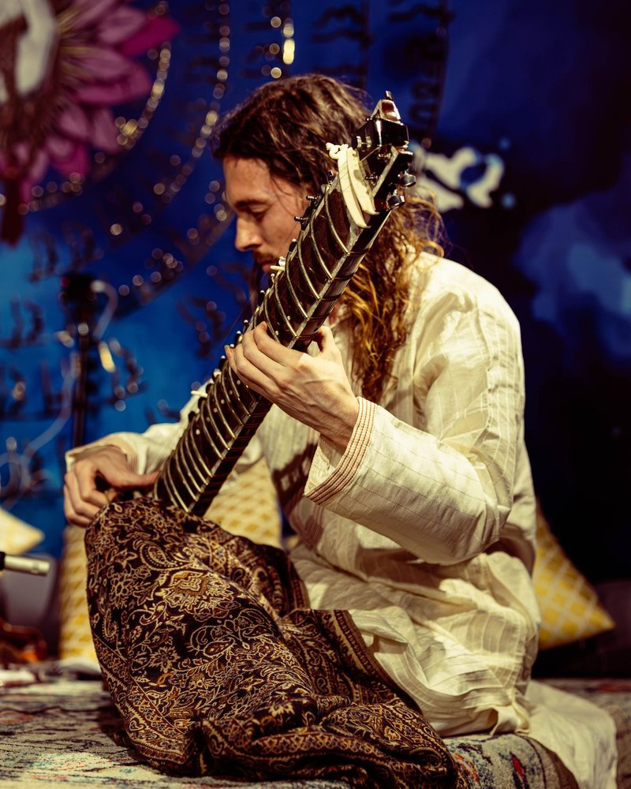
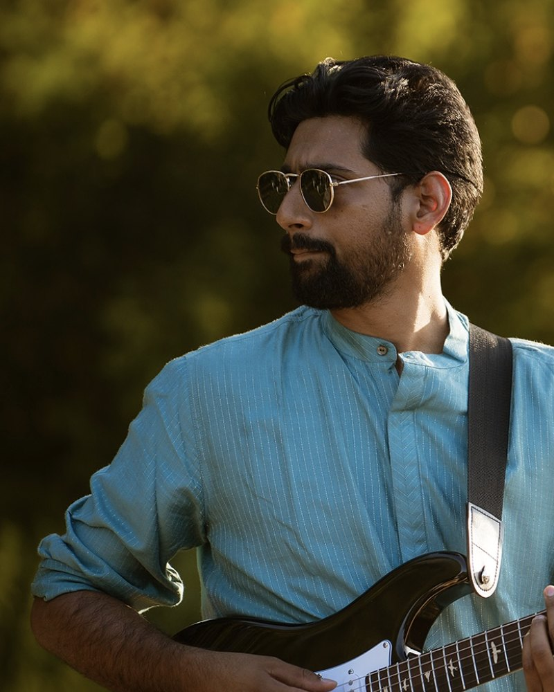

DrumsDrums · Jazz · Africa
Siemy Di
The driving vision behind Talayan. Siemy's kit is the project's open, improvising voice — the pulse that invites the other traditions in and keeps the conversation moving.
Saturday 7 November 2026
Four players. Three traditions. One pulse.
A drum kit shaped by jazz and Africa. A tabla carrying centuries of tala. A sitar, and a guitar that sings in Carnatic. For one evening in Hoxton they stop being four traditions and become a single conversation — and you get to be in the room when it happens.
St John’s Hoxton, London · Doors 6:30pm · Music 7:00pm
Watch
Talayan 1.0, live. Two minutes will tell you more than any description — then come and hear what it has become.
Plays right here on the page — or watch it on YouTube ↗
The Invitation
Talayan began as a question between two players: what survives when a rhythm crosses a border — and what becomes something new?
Talayan 2.0 is the next answer. Siemy Di brings the open, improvising pulse of the jazz and African lineage. Manmohan Dogra answers with tala — the cyclical grammar of Indian classical rhythm, carried in the tabla's speaking voice. Around them, Etienne Bartholomew's sitar and Varun Guru's guitar give the rhythm a melody to argue with.
Nothing here is a fusion set with the edges sanded off. Each tradition arrives whole, with its own weight and its own rules, and the evening is the sound of four musicians finding out in real time where those rules bend. Some of it is written. The best of it isn't.
An intimate room in Hoxton, and an audience close enough to watch hands move. If you have ever wanted to hear where two musical worlds actually touch — not blended, but meeting — this is the night.
A study of change, played out loud.
Indian classical tala, the polyrhythm and groove of Africa, and the improvising freedom of jazz — each given room to speak in its own voice before they meet.
Drum kit and tabla trading phrases, sitar and guitar threading melody through the cycle. Close enough to see the decisions being made.
You don't need to know a tala from a time signature. You'll leave hearing rhythm — in any music — slightly differently than you did walking in.
On Stage
Two players at the heart of Talayan, and two artists who bring the melody in.

DrumsDrums · Jazz · Africa
The driving vision behind Talayan. Siemy's kit is the project's open, improvising voice — the pulse that invites the other traditions in and keeps the conversation moving.

TablaTabla · India
Tabla player and torch-bearer of the Indian classical rhythmic tradition, answering the kit with the cyclical language of tala and the tabla's melodic, speaking tone.

Featured guest SitarSitar
The melodic voice that bridges the percussive worlds of tabla and jazz drums — sitar lines carrying both raga's gravity and improvisation's freedom.

New guest artist GuitarGuitar · Composer
Composer and guitarist rooted in the Carnatic tradition, carrying South Indian melody onto the electric guitar and threading raga-shaped lines through the ensemble.
Practical Details
7 November 2026 · London
Talayan is never played the same way twice — that is rather the point. Come and hear this version of it.